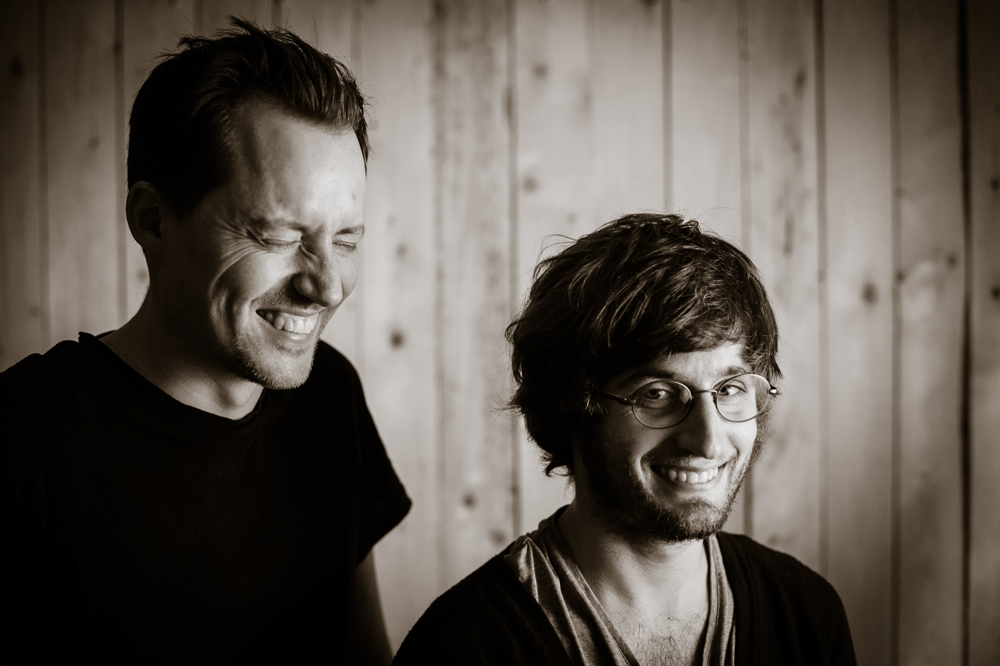

“Klang-/Licht STROM” is a collaborative project of Ben Bengler (music, live electronics) and Thomas Geissl (light, programming), performing together as Bengler/Geissl since 2018. It’s driven by their shared vision for creating performances where the audience is in the centre of things, with sound and light unfolding around them.
Largely free from strictly timed sequencing, Bengler creates and evolves the music via real-time audio manipulation and sound processing techniques. The music is analysed in real-time and Geissl uses the derived data as a raw material, augmenting and manipulating it with a custom software tool to play the spatial light setup.
In this way, Bengler/Geissl conjure up an interconnected and fluid choreography of sound and light unfolding around the audience.

Klang-/Licht STROM is a collaboration between Ben Bengler and Thomas Geissl.
Thomas is a creative technologist who creates experiences that touch people by fusing the analog and the digital world. He believes in free software and enjoys collaborating with others. Music plays an important role in his life. He writes his own performance software and tools.